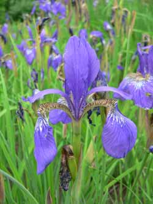

Spring Flowers
Spring Time, the time of growth and renewal of new plant and animal life. Spring comes at different times in the North and South Hemispheres. Spring time in the Northern hemisphere is between March - May, and between September - November in the Southern hemisphere. Most flowering plants bloom during spring time. Therefore, flowers that bloom only during spring, Spring Flowers, bloom at different times in the two hemispheres.
Some of the flowers blooming in Spring are: Agapanthus, Amaryllis, Anemone, Apple blossom, Bird of Paradise, Brodea, Calla lily, Cherry Blossom, Corn flower, Cosmose, Dahlia, Delphinium, Delwood, Forsythia, Freesia, Gardenia, Heather, Helleborus, Hollyhock, Hyacinth, Larkspur, Casa Blanca Lily, Gloriosa Lily, Stargazer, Liatrus, Lilac, Lisianthus, Narcissus, Orchid, Peach blossom, Peony, Phlox, Poppy, Protea, Pussy willow, Ranunculus, Rose, Seeded Eucalyptus, Solidago, Statice, Stephanotis, Stock, Sweet Pea, Tulip, Viburnum, Wax flower, Zinnia.
Iris
From Wikipedia, the free encyclopedia.
Iris is a genus of between 200-300 species of flowering plants with showy flowers. It takes its name from the Greek word for a rainbow, referring to the wide variety of flower colors found among the many species. As well as being the scientific name, iris is also very widely used as a common name; for one thing, it refers to all Iris species, but some plants called thus belong to closely related genera. In North America, a common name for irises is flags, while the subgenus Scorpiris is widely known as junos, particularly in horticulture.

The genus is widely distributed throughout the north temperate zone. Their habitats are considerably varied, ranging from cold and mountain regions to the grassy slopes, meadowlands and riverbanks of Europe, the Middle East and northern Africa, Asia and across North America.
The inflorescences are fan-shaped and contain one or more symmetrical six-lobed flowers. These grow on a pedicel or lack a footstalk. The three sepals, which are spreading or droop downwards, are referred to as "falls". They expand from their narrow base, which in some of the rhizomatous irises has a "beard" (a tuft of short upright extensions growing in its midline), into a broader expanded portion ("limb"), often adorned with veining, lines or dots. The three, sometimes reduced, petals stand upright, partly behind the sepal bases. They are called "standards". Some smaller iris species have all six lobes pointing straight outwards, but generally, limb and standards differ markedly in appearance. They are united at their base into a floral tube that lies above the ovary. The styles divide towards the apex into petaloid branches; this is significant in pollination.
The iris flower is of special interest as an example of the relation between flowering plants and pollinating insects. The shape of the flower and the position of the pollen-receiving and stigmatic surfaces on the outer petals form a landing-stage for a flying insect, which in probing the perianth for nectar, will first come in contact of perianth, then with the stigmatic stamens in one whorled surface which is borne on an ovary formed of three carpels. The shelf-like transverse projection on the inner whorled underside of the stamens is beneath the over-arching style arm below the stigma, so that the insect comes in contact with its pollen-covered surface only after passing the stigma; in backing out of the flower it will come in contact only with the non-receptive lower face of the stigma. Thus, an insect bearing pollen from one flower will, in entering a second, deposit the pollen on the stigma; in backing out of a flower, the pollen which it bears will not be rubbed off on the stigma of the same flower.
Use
Irises are extensively grown as ornamental plants in home and botanical gardens. Presby Memorial Iris Gardens in New Jersey, for example, is a living iris museum with over 10,000 plants, while in Europe the most famous iris garden is arguably the Giardino dell'Iris in Florence (Italy) which every year hosts one of the most famous iris breeders' competitions in the world.
Some rhizomes are traded as orris root and are used in perfume and medicine, though more common in ancient times than today. Today Iris essential oil (absolute) from flowers are sometimes used in aromatherapy as sedative medicines. The dried rhizomes are also given whole to babies to help in teething. Some gin brands use orris root and sometimes iris flowers for flavor and color.
Snowdrop
From Wikipedia, the free encyclopedia.
Snowdrop is the common name for members of the genus Galanthus, a small genus of about 20 species in the family Amaryllidaceae; snowdrops are among the first bulbs to bloom in spring, although certain species flower in late autumn and winter.

Galanthus nivalis is the best-known and most widespread representative of the genus Galanthus. It is native to a large area of Europe, stretching from the Pyrenees in the west, through France and Germany to Poland in the north, Italy, Northern Greece and European Turkey. It has been introduced and is widely naturalised elsewhere. Although it is often thought of as a British native wild flower, or to have been brought to the British Isles by the Romans, it was probably introduced around the early sixteenth century.
All species of Galanthus are perennial, herbaceous plants which grow from bulbs. The flower has no petals: it consists of six tepals, the outer three being larger and more convex than the inner series. An important feature which helps to distinguish between species (and to help to determine the parentage of hybrids) is their "vernation" (the arrangement of the emerging leaves relative to each other). This can be "applanate", "supervolute" or "explicative". In applanate vernation the two leaf blades are pressed flat to each other within the bud and as they emerge; explicative leaves are also pressed flat against each other, but the edges of the leaves are folded back or sometimes rolled; in supervolute plants one leaf is tightly clasped around the other within the bud and generally remains at the point where the leaves emerge from the soil.